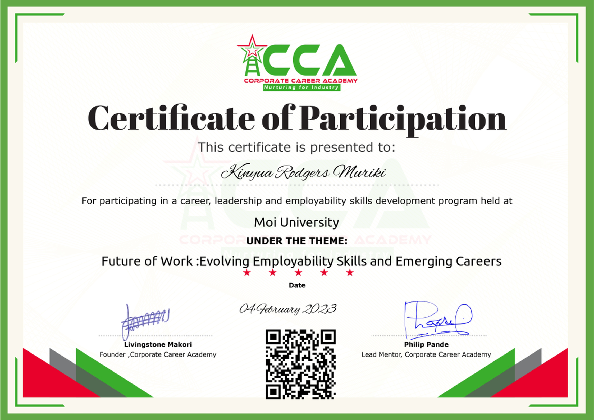

My name is Rodgers Muriki. I am an experienced web developer well equipped with HTML and CSS skiils. I have provided proven solutions for various entities. Besides that I am an hardworking and persistent individual. I can work on tight deadlines to produce desirable results.
I am currently a second year student in Moi University, Kenya pursuing a bachelors degree in Actuarial Science.
I have not engaged in any kind of work since I am always at school for the bigger part of My time. However, I have taken part in some volluntary work such as community projects at My local home.
I posses both great HTML and CSS skills. I am also an expert in social media management and a few general essential computer operations.
I have not been able to gather a great deal of awards however, below is a certificate of participation I received a year ago after attending a career coaching session.
